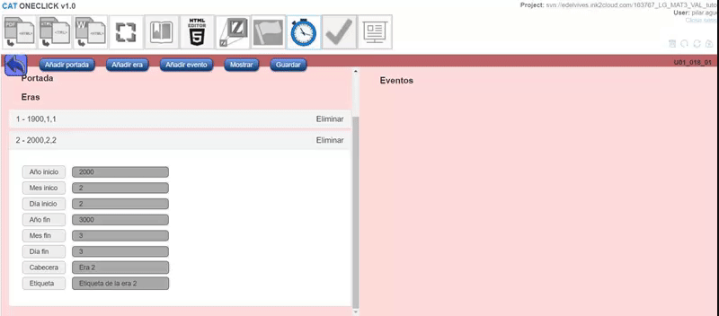

En este manual, vamos a ver cómo se crea un Timeline, para poder enlazarla posteriormente como contenido adicional de nuestras ediciones digitales. Su enlace al libro es objeto de otro manual específico:
Como su propio nombre indica, se denomina timeline a una línea de tiempo que ayuda a la comprensión de ciertos contenidos en los que es importante remarcar las fases o el tiempo en los que han acontecido. Los timelines pueden contener audios, vídeos, imágenes, etc. para completar la información de forma interactiva:
Por tanto, vamos a explicar las fases de edición para conseguir generar un Timeline.
Desde editorial, se nos indicará el listado de líneas de tiempo que hay que incluir en el libro, además del contenido adicional (imágenes, audios, videos) que haya que incluir en ellas.
Lo primero que hay que hacer es adaptar las imágenes de origen proporcionadas por editorial a un tamaño adecuado, en este caso, el tamaño se refiere a cada una de las imágenes a insertar. Además, dado que las imágenes no se pueden deformar, la dimensión mayor no debería exceder de 200 px y su resolución a 72 ppp. Las imágenes deben guardarse mediante la opción de PS Archivo/Exportar/Guardar para web/ en png 24 con transparencia y sin halo.
Renombraremos cada una de las imágenes de la siguiente manera (U06_108_01a.png):
Es buena práctica generar estas imágenes en una carpeta de trabajo fuera del repositorio del que estemos trabajando.
Una vez que las tenemos generadas, en el repositorio del libro, en la carpeta TIMELINE generamos una carpeta denominada de la siguiente manera (U01_018_01):
Dentro de esta carpeta generaremos una carpeta res, y dentro de ella pondremos las imágenes que hemos creado con el PS:
El resto de contenidos si los hubiere como audios, videos, etc., irán nombrados del mismo modo y ubicados en la misma carpeta.
Realizamos el mismo proceso con todos y cada uno de los timelines del libro en el que estamos trabajando y comiteamos el repositorio.
Una vez que tenemos todas nuestras carpetas de timeline comiteadas en el repositorio, tenemos que acceder al CAT.
Para poder logarse en el CAT es necesario disponer de:

Para acceder a la herramienta del Cat que nos ayudará a terminar de generar los Timeline, denominada Timeline Editor pulsamos el siguiente icono:
Pulsaremos sobre el botón “Nueva línea temporal”, en la pantalla que se nos abre rellenaremos el campo de nombre con el código del timeline (el nombre de la carpeta U01_018_01) y en el directorio del proyecto seleccionaremos la carpeta que ya tenemos creada (U01_018_01):
Tras dar a aceptar, la herramienta volverá a la pantalla inicial.
Ahora pulsamos el botón “Abrir línea temporal” y seleccionamos el que acabamos de crear:
Se nos abrirá una pantalla de opciones en la que podemos definir desde el idioma en el que irán las anotaciones de la interface, a los aspectos propios del contenido del timeline:
La herramienta permite múltiples combinaciones, por tanto, procedemos a enumerar los aspectos más habituales, aunque podrían realizarse líneas de tiempo mucho más complejas.
La herramienta necesita introducir ciertas fechas (mínimo comienzo y fin), sin embargo, en algunas ocasiones, necesitaremos crear líneas de tiempo en las que las fechas no aparezcan (ejemplo una línea de tiempo en la que aparezcan hitos antes de cristo y después de cristo A.D y D.C) para casos como estos, seleccionaremos la opción ocultar fechas:
Habitualmente no añadimos portada, por lo que nos saltaremos este paso (el uso de esta opción es muy intuitivo si hiciera falta utilizarlo):
Añadir era: podemos determinar periodos dentro de los cuales posteriormente destacaremos ciertas fechas o eventos:
En cada una de las eras, rellenamos los campos correspondientes:
En cada era, mientras la tenemos abierta en el menú izquierdo, podemos crear tantos eventos como sean necesarios:
De cada uno de ellos debemos rellenar los campos:
En el campo de media, se nos abrirá un selector que nos lleva a la carpeta res que habíamos creado en el repositorio, por tanto, podremos elegir cualquiera de los archivos que hayamos introducido previamente (imágenes, audio, video, etc…)
En el campo de miniatura, se nos abrirá un selector que nos lleva a la carpeta res que habíamos creado en el repositorio, por tanto, podremos elegir cualquiera de los archivos de imagen que hayamos introducido previamente
Según vamos rellenando eventos, podemos ir pulsando mostrar, para ir viendo el aspecto del timeline que estamos creando:
Una vez hayamos creado todos los eventos de todas las eras, y comprobado que el efecto es el deseado, pulsamos el botón guardar (ya sea desde la previsualización o desde la pantalla principal):
Si updateamos el repositorio, observaremos que en nuestra carpeta se ha creado el archivo “content.timeline.json”
De esta forma tenemos nuestra línea temporal preparada para ser enlazada en nuestro libro.
Realizaremos esta operación con todos los timelines que contenga el libro en el que estemos trabajando.